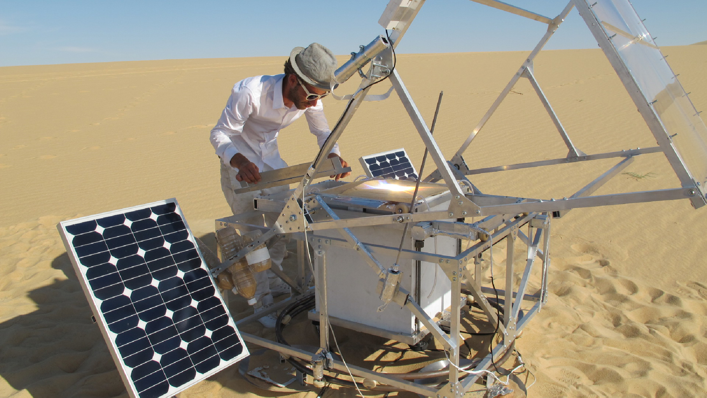
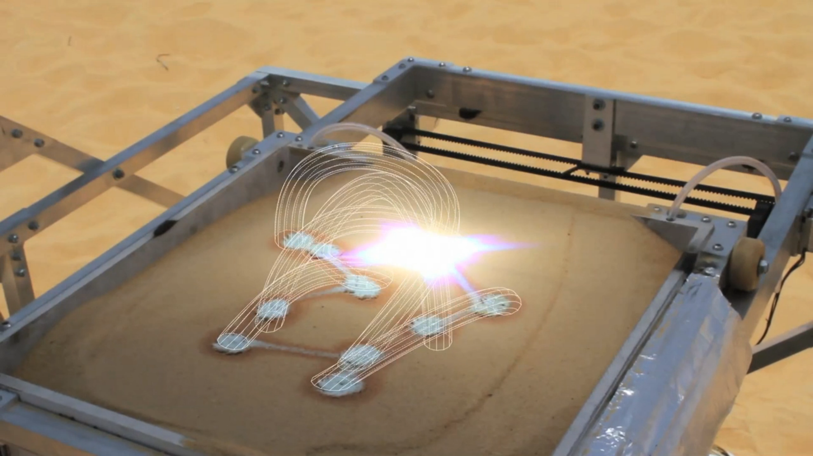

Introduction to openFrameworks
Introduction to openFrameworks
Introduction to openFrameworks
Introduction to openFrameworks
Introduction to openFrameworks
Slides are here: https://mhellar.github.io/ofworkshop/1
Grab the code here: http://bit.ly/2c5wYej
- Introductions
- What is openFrameworks
- Installing and running your first example
- File and Code structure of a project
- Drawing in 2D
- Rendering text
- Programming: Variables, Functions, Vectors and Classes
- GUI
- Working with Images and Videos
- Sound basics
Topics for Today
openFrameworks is an open source C++ toolkit used for creative coding. It was created by Zach Lieberman in 2005. Today oF is one of the primary creative coding platforms. It is actively maintained by Zach Leiberman, Theodore Watson, Arturo Castro and the openFrameworks community
openFrameworks is indebted to to some significant precursors, mainly the Processing programming environment. Lets have a brief history lesson.
Design by Numbers 1999

John Maeda
Processing 2001 - Present

Casey Reas and Ben Fry
Casey Reas, Articulate(2003)

Arduino 2005 - Present

Markus Kayser: Solar-sintered Bowl. 2011
 “The two most important introductions for art in the past 20 years have been the Arduino and Processing,”
- Paola Antonelli, senior curator in the Department of Architecture and Design at the Museum of Modern Art.
Open Frameworks 2005 - Present
Zachary Lieberman
Rafael Lozano-Hemmer - Level of Confidence(2015)

p5.js
Lauren McCarthy
Cinder

Clouds Documentary
Openframeworks compiles for the following platforms:
- OSX(Darwin)
- Windows
- Linux
- IOS
- Android
- Linux on ARM(i.e. Raspberry Pi)
Use Cases(suggested)
- oF's core libraries deal with Multimedia, 2D and 3D graphics, images, video and sound. oF is good for developing new media projects for onsite installations and also rich multimedia desktop or mobile apps
- It works with the C++ language which is compiled to native machine code for the target platform, whch results in very performant fast applications that maximize the latest harware.
- It is not Web first (it is possible to transpile to asm.js Emscripten but this is very new and not eveything works)
- Great for interaction prototyping!
"Please Empty Your Pockets" (2010) by Rafael Lozano-Hemmer from bitforms gallery on Vimeo.


Getting Set Up:
- You should have Xcode or Visual Studio 2015 installed
- Also, you should have downloaded oF for your system
- I like to keep the oF folder in Documents
Running you first example(OSX)
On OSX go to oFroot/examples/3d/3DPrimitivesExample and double click 3DPrimitivesExample.xcodeproj

1. Set the dropdown to 3DPrimitivesExample Debug 64-bit 2. Hit the play button

Final Result